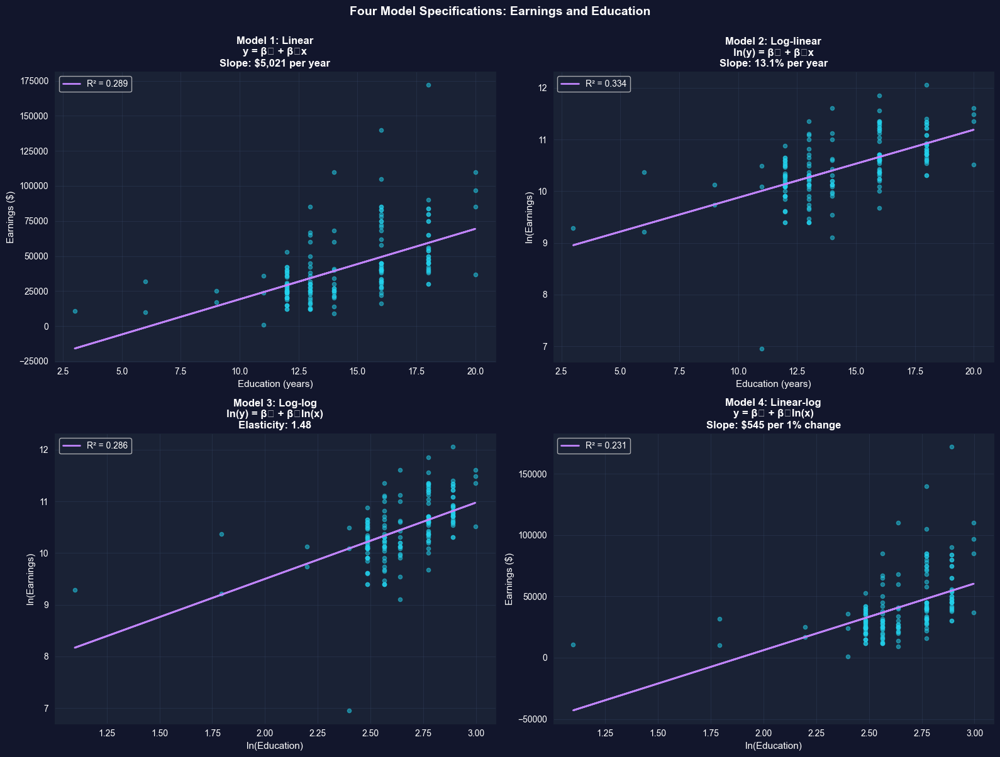
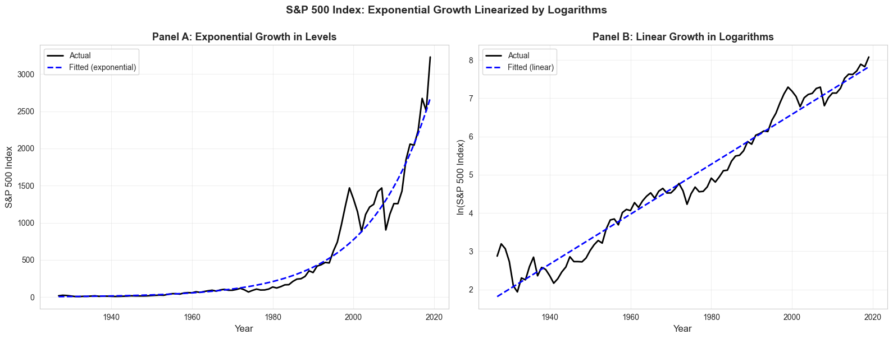

This notebook teaches you how to use natural logarithms in regression analysis to measure elasticities, semi-elasticities, and percentage changes—essential tools for empirical economics.
Open In Colab
Chapter Overview
Why logarithms in economics?
Economists care about proportionate changes more than absolute changes: - A $10,000 salary increase means different things at $30,000 vs $300,000 income - A $1 price change matters differently for a $2 item vs a $100 item - Economic theory often predicts percentage responses (e.g., price elasticity of demand)
Natural logarithms let us work with proportionate changes easily in regression models.
What you’ll learn: - Understand the natural logarithm function and its basic properties - Use logarithmic transformations to approximate proportionate and percentage changes - Distinguish between semi-elasticity and elasticity - Interpret coefficients in log-linear, log-log, and linear-log regression models - Apply logarithmic models to analyze the relationship between earnings and education - Linearize exponential growth patterns using natural logarithms - Apply the Rule of 72 to calculate doubling times for compound growth - Choose the appropriate model specification for different economic questions
Datasets used: - AED_EARNINGS.DTA: Annual earnings and education for 171 full-time workers aged 30 (2010) - AED_SP500INDEX.DTA: S&P 500 stock market index, annual data 1927-2019 (93 years)
Chapter outline: - 9.1 Natural Logarithm Function - 9.2 Semi-Elasticities and Elasticities - 9.3 Example: Earnings and Education - 9.4 Further Uses: Exponential Growth - Key Takeaways - Practice Exercises - Case Studies
Setup
Run this cell first to import all required packages and configure the environment.
# Import required librariesimport numpy as npimport pandas as pdimport matplotlib.pyplot as pltimport seaborn as snsimport statsmodels.api as smfrom statsmodels.formula.api import olsfrom scipy import statsimport randomimport os# Set random seeds for reproducibilityRANDOM_SEED =42random.seed(RANDOM_SEED)np.random.seed(RANDOM_SEED)os.environ['PYTHONHASHSEED'] =str(RANDOM_SEED)# GitHub data URL (data streams directly from here)GITHUB_DATA_URL ="https://raw.githubusercontent.com/quarcs-lab/data-open/master/AED/"# Optional: Create directories for saving outputs locallyIMAGES_DIR ='images'TABLES_DIR ='tables'os.makedirs(IMAGES_DIR, exist_ok=True)os.makedirs(TABLES_DIR, exist_ok=True)# Set plotting stylesns.set_style("whitegrid")plt.rcParams['figure.figsize'] = (10, 6)print("✓ Setup complete! All packages imported successfully.")print(f"✓ Random seed set to {RANDOM_SEED} for reproducibility.")print(f"✓ Data will stream from: {GITHUB_DATA_URL}")
✓ Setup complete! All packages imported successfully.
✓ Random seed set to 42 for reproducibility.
✓ Data will stream from: https://raw.githubusercontent.com/quarcs-lab/data-open/master/AED/
9.1 Natural Logarithm Function
The natural logarithm ln(x) is the logarithm to base e ≈ 2.71828…
Multiplying by 100 gives the percentage change: 100 × Δln(x) ≈ %Δx.
Why this matters: This approximation allows us to interpret regression coefficients involving logged variables as proportionate or percentage changes — exactly what economists care about when analyzing earnings, prices, GDP, and other economic variables.
Accuracy: The approximation is excellent for changes under 10%. For larger changes, use the exact formula: %Δx = 100 × (e^Δln(x) - 1).
Now that we understand the mathematical properties of logarithms, we can apply them to define two key economic concepts: semi-elasticity and elasticity.
9.2 Semi-Elasticities and Elasticities
Two key concepts in economics:
Semi-Elasticity
Definition: Proportionate change in y for a unit change in x \[\text{Semi-elasticity}_{yx} = \frac{\Delta y / y}{\Delta x}\]
Multiplied by 100: percentage change in y when x increases by 1 unit
Example: Semi-elasticity of earnings with respect to education = 0.08
One more year of schooling → 8% increase in earnings
Elasticity
Definition: Proportionate change in y for a proportionate change in x \[\text{Elasticity}_{yx} = \frac{\Delta y / y}{\Delta x / x}\]
This is why we use logarithms in regression! The slope coefficient directly estimates the semi-elasticity or elasticity.
print("="*70)print("MODEL INTERPRETATIONS")print("="*70)print("\n1. LINEAR MODEL: y = β₀ + β₁x")print(" Interpretation: Δy = β₁Δx")print(" Example: β₁ = 5000 means $5,000 increase in y when x increases by 1")print("\n2. LOG-LINEAR MODEL: ln(y) = β₀ + β₁x")print(" Interpretation: %Δy ≈ 100β₁Δx (semi-elasticity)")print(" Example: β₁ = 0.08 means 8% increase in y when x increases by 1")print("\n3. LOG-LOG MODEL: ln(y) = β₀ + β₁ln(x)")print(" Interpretation: %Δy ≈ β₁%Δx (elasticity)")print(" Example: β₁ = 1.5 means 1.5% increase in y when x increases by 1%")print("\n4. LINEAR-LOG MODEL: y = β₀ + β₁ln(x)")print(" Interpretation: Δy ≈ (β₁/100)%Δx")print(" Example: β₁ = 500 means $5 increase in y when x increases by 1%")print("\n"+"="*70)print("KEY TAKEAWAY")print("="*70)print("The choice of model specification determines the interpretation:")print(" - Which model to use depends on economic theory and data properties")print(" - Log transformations are especially useful for:")print(" • Right-skewed variables (earnings, prices, firm size)")print(" • Multiplicative relationships")print(" • Proportionate/percentage effects")
======================================================================
MODEL INTERPRETATIONS
======================================================================
1. LINEAR MODEL: y = β₀ + β₁x
Interpretation: Δy = β₁Δx
Example: β₁ = 5000 means $5,000 increase in y when x increases by 1
2. LOG-LINEAR MODEL: ln(y) = β₀ + β₁x
Interpretation: %Δy ≈ 100β₁Δx (semi-elasticity)
Example: β₁ = 0.08 means 8% increase in y when x increases by 1
3. LOG-LOG MODEL: ln(y) = β₀ + β₁ln(x)
Interpretation: %Δy ≈ β₁%Δx (elasticity)
Example: β₁ = 1.5 means 1.5% increase in y when x increases by 1%
4. LINEAR-LOG MODEL: y = β₀ + β₁ln(x)
Interpretation: Δy ≈ (β₁/100)%Δx
Example: β₁ = 500 means $5 increase in y when x increases by 1%
======================================================================
KEY TAKEAWAY
======================================================================
The choice of model specification determines the interpretation:
- Which model to use depends on economic theory and data properties
- Log transformations are especially useful for:
• Right-skewed variables (earnings, prices, firm size)
• Multiplicative relationships
• Proportionate/percentage effects
Key Concept 9.2: Semi-Elasticity vs. Elasticity
These two concepts measure how y responds to changes in x, but in different ways:
Semi-elasticity = (Δy/y) / Δx — proportionate change in y per unit change in x
Elasticity = (Δy/y) / (Δx/x) — proportionate change in y per proportionate change in x
In regression models: - Semi-elasticity ≈ Δln(y)/Δx → estimated by the slope in a log-linear model - Elasticity ≈ Δln(y)/Δln(x) → estimated by the slope in a log-log model
When to use each: - Semi-elasticity: When x is measured in natural units (years of education, age) - Elasticity: When both variables are measured in proportions (price and quantity, GDP and investment)
With the concepts of semi-elasticity and elasticity defined, let’s apply all four model specifications to a real dataset to compare interpretations.
9.3 Example: Earnings and Education
Research Question: How do earnings vary with years of education?
We’ll estimate four different models and compare their interpretations:
Linear: earnings = β₀ + β₁(education)
Log-linear: ln(earnings) = β₀ + β₁(education)
Log-log: ln(earnings) = β₀ + β₁ln(education)
Linear-log: earnings = β₀ + β₁ln(education)
Dataset: 171 full-time workers aged 30 in 2010 - earnings: Annual earnings in dollars - education: Years of completed schooling
Each model answers a slightly different question and has different economic interpretation.
# Load and explore the datadata_earnings = pd.read_stata(GITHUB_DATA_URL +'AED_EARNINGS.DTA')print("="*70)print("DATA SUMMARY: EARNINGS AND EDUCATION")print("="*70)print(data_earnings[['earnings', 'education']].describe())print("\nFirst 5 observations:")print(data_earnings[['earnings', 'education']].head())
======================================================================
DATA SUMMARY: EARNINGS AND EDUCATION
======================================================================
earnings education
count 171.000000 171.000000
mean 41412.690058 14.432749
std 25527.053396 2.735364
min 1050.000000 3.000000
25% 25000.000000 12.000000
50% 36000.000000 14.000000
75% 49000.000000 16.000000
max 172000.000000 20.000000
First 5 observations:
earnings education
0 25000 14
1 40000 12
2 25000 13
3 38000 13
4 28800 12
# Create log-transformed variablesdata_earnings['lnearn'] = np.log(data_earnings['earnings'])data_earnings['lneduc'] = np.log(data_earnings['education'])print("="*70)print("VARIABLES (ORIGINAL AND LOG-TRANSFORMED)")print("="*70)table_vars = ['earnings', 'lnearn', 'education', 'lneduc']print(data_earnings[table_vars].describe())print("\nNotice:")print(" - Log(earnings) has much less variability (std = 0.62 vs 25,527)")print(" - Log transformation reduces right skewness in earnings")
======================================================================
VARIABLES (ORIGINAL AND LOG-TRANSFORMED)
======================================================================
earnings lnearn education lneduc
count 171.000000 171.000000 171.000000 171.000000
mean 41412.690058 10.457638 14.432749 2.648438
std 25527.053396 0.622062 2.735364 0.225220
min 1050.000000 6.956545 3.000000 1.098633
25% 25000.000000 10.126631 12.000000 2.484375
50% 36000.000000 10.491274 14.000000 2.638672
75% 49000.000000 10.799367 16.000000 2.773438
max 172000.000000 12.055250 20.000000 2.996094
Notice:
- Log(earnings) has much less variability (std = 0.62 vs 25,527)
- Log transformation reduces right skewness in earnings
Model 1: Linear Model
Specification: earnings = β₀ + β₁(education) + ε
Interpretation: β₁ = change in earnings (in dollars) for one additional year of education
# Model 1: Linearprint("="*70)print("MODEL 1: LINEAR - earnings = β₀ + β₁(education)")print("="*70)model_linear = ols('earnings ~ education', data=data_earnings).fit()print(model_linear.summary())print("\n"+"="*70)print("INTERPRETATION")print("="*70)print(f"Coefficient on education: ${model_linear.params['education']:,.2f}")print(f"\nEconomic meaning:")print(f" Each additional year of education is associated with a")print(f" ${model_linear.params['education']:,.2f} increase in annual earnings.")print(f"\nR² = {model_linear.rsquared:.3f}")print(f" → Education explains {model_linear.rsquared*100:.1f}% of variation in earnings.")
======================================================================
MODEL 1: LINEAR - earnings = β₀ + β₁(education)
======================================================================
OLS Regression Results
==============================================================================
Dep. Variable: earnings R-squared: 0.289
Model: OLS Adj. R-squared: 0.285
Method: Least Squares F-statistic: 68.86
Date: Wed, 21 Jan 2026 Prob (F-statistic): 3.22e-14
Time: 00:01:47 Log-Likelihood: -1948.1
No. Observations: 171 AIC: 3900.
Df Residuals: 169 BIC: 3907.
Df Model: 1
Covariance Type: nonrobust
==============================================================================
coef std err t P>|t| [0.025 0.975]
------------------------------------------------------------------------------
Intercept -3.106e+04 8887.835 -3.494 0.001 -4.86e+04 -1.35e+04
education 5021.1229 605.101 8.298 0.000 3826.593 6215.653
==============================================================================
Omnibus: 78.232 Durbin-Watson: 1.783
Prob(Omnibus): 0.000 Jarque-Bera (JB): 292.688
Skew: 1.791 Prob(JB): 2.78e-64
Kurtosis: 8.315 Cond. No. 79.5
==============================================================================
Notes:
[1] Standard Errors assume that the covariance matrix of the errors is correctly specified.
======================================================================
INTERPRETATION
======================================================================
Coefficient on education: $5,021.12
Economic meaning:
Each additional year of education is associated with a
$5,021.12 increase in annual earnings.
R² = 0.289
→ Education explains 28.9% of variation in earnings.
Interpretation: β₁ = semi-elasticity = proportionate change in earnings for one more year of education
Practical interpretation: 100β₁ = percentage change in earnings for one more year of education
This is the most common specification for earnings equations!
# Model 2: Log-linearprint("="*70)print("MODEL 2: LOG-LINEAR - ln(earnings) = β₀ + β₁(education)")print("="*70)model_loglin = ols('lnearn ~ education', data=data_earnings).fit()print(model_loglin.summary())print("\n"+"="*70)print("INTERPRETATION")print("="*70)print(f"Coefficient on education: {model_loglin.params['education']:.4f}")print(f"\nEconomic meaning:")print(f" Each additional year of education is associated with a")print(f" {100*model_loglin.params['education']:.2f}% increase in earnings.")print(f"\nWhy this is better than Model 1:")print(f" - Percentage interpretation is more meaningful (scales automatically)")print(f" - 13.1% increase applies whether you earn $30k or $100k")print(f" - Better fit (R² = {model_loglin.rsquared:.3f} vs {model_linear.rsquared:.3f})")
======================================================================
MODEL 2: LOG-LINEAR - ln(earnings) = β₀ + β₁(education)
======================================================================
OLS Regression Results
==============================================================================
Dep. Variable: lnearn R-squared: 0.334
Model: OLS Adj. R-squared: 0.330
Method: Least Squares F-statistic: 84.74
Date: Wed, 21 Jan 2026 Prob (F-statistic): 1.28e-16
Time: 00:01:47 Log-Likelihood: -126.21
No. Observations: 171 AIC: 256.4
Df Residuals: 169 BIC: 262.7
Df Model: 1
Covariance Type: nonrobust
==============================================================================
coef std err t P>|t| [0.025 0.975]
------------------------------------------------------------------------------
Intercept 8.5608 0.210 40.825 0.000 8.147 8.975
education 0.1314 0.014 9.206 0.000 0.103 0.160
==============================================================================
Omnibus: 58.560 Durbin-Watson: 1.809
Prob(Omnibus): 0.000 Jarque-Bera (JB): 351.030
Skew: -1.091 Prob(JB): 5.96e-77
Kurtosis: 9.671 Cond. No. 79.5
==============================================================================
Notes:
[1] Standard Errors assume that the covariance matrix of the errors is correctly specified.
======================================================================
INTERPRETATION
======================================================================
Coefficient on education: 0.1314
Economic meaning:
Each additional year of education is associated with a
13.14% increase in earnings.
Why this is better than Model 1:
- Percentage interpretation is more meaningful (scales automatically)
- 13.1% increase applies whether you earn $30k or $100k
- Better fit (R² = 0.334 vs 0.289)
Key Concept 9.3: Interpreting Log-Linear Model Coefficients
In the log-linear model ln(y) = β₀ + β₁x, the slope coefficient β₁ is the semi-elasticity of y with respect to x:
\[100 \times \beta_1 = \text{percentage change in } y \text{ when } x \text{ increases by 1 unit}\]
This is the most common specification in labor economics because a percentage interpretation scales automatically — a 13% return to education applies equally whether you earn $30,000 or $100,000.
Important: The exact percentage change for large β₁ is 100 × (e^β₁ - 1), not 100 × β₁. The approximation works well when β₁ < 0.10.
Interpretation: β₁ = elasticity = percentage change in earnings for a 1% change in education
Note: A “1% increase in education” is a bit artificial (what does 0.14 more years mean?), but this model captures diminishing returns to education.
# Model 3: Log-logprint("="*70)print("MODEL 3: LOG-LOG - ln(earnings) = β₀ + β₁ln(education)")print("="*70)model_loglog = ols('lnearn ~ lneduc', data=data_earnings).fit()print(model_loglog.summary())print("\n"+"="*70)print("INTERPRETATION")print("="*70)print(f"Coefficient on ln(education): {model_loglog.params['lneduc']:.4f}")print(f"\nEconomic meaning:")print(f" A 1% increase in education is associated with a")print(f" {model_loglog.params['lneduc']:.3f}% increase in earnings (elasticity).")print(f"\nAlternative interpretation:")print(f" If education increases from 14 to 14.14 years (1% increase),")print(f" earnings increase by approximately {model_loglog.params['lneduc']:.2f}%.")
======================================================================
MODEL 3: LOG-LOG - ln(earnings) = β₀ + β₁ln(education)
======================================================================
OLS Regression Results
==============================================================================
Dep. Variable: lnearn R-squared: 0.286
Model: OLS Adj. R-squared: 0.282
Method: Least Squares F-statistic: 67.78
Date: Wed, 21 Jan 2026 Prob (F-statistic): 4.76e-14
Time: 00:01:47 Log-Likelihood: -132.13
No. Observations: 171 AIC: 268.3
Df Residuals: 169 BIC: 274.5
Df Model: 1
Covariance Type: nonrobust
==============================================================================
coef std err t P>|t| [0.025 0.975]
------------------------------------------------------------------------------
Intercept 6.5454 0.477 13.725 0.000 5.604 7.487
lneduc 1.4775 0.179 8.233 0.000 1.123 1.832
==============================================================================
Omnibus: 56.464 Durbin-Watson: 1.786
Prob(Omnibus): 0.000 Jarque-Bera (JB): 332.274
Skew: -1.048 Prob(JB): 7.04e-73
Kurtosis: 9.499 Cond. No. 35.9
==============================================================================
Notes:
[1] Standard Errors assume that the covariance matrix of the errors is correctly specified.
======================================================================
INTERPRETATION
======================================================================
Coefficient on ln(education): 1.4775
Economic meaning:
A 1% increase in education is associated with a
1.478% increase in earnings (elasticity).
Alternative interpretation:
If education increases from 14 to 14.14 years (1% increase),
earnings increase by approximately 1.48%.
Key Concept 9.4: Interpreting Log-Log Model Coefficients
In the log-log model ln(y) = β₀ + β₁ln(x), the slope coefficient β₁ is the elasticity of y with respect to x:
\[\beta_1 = \frac{\%\Delta y}{\%\Delta x}\]
A 1% increase in x is associated with a β₁% change in y. Unlike semi-elasticity, elasticity is a unit-free measure — it does not depend on the units of measurement.
Economic interpretation: If β₁ < 1, there are diminishing returns (each additional percent of x yields less than one percent of y). If β₁ > 1, there are increasing returns.
Interpretation: β₁/100 = dollar change in earnings for a 1% increase in education
This model is less common but captures diminishing returns (additional years of education have decreasing marginal effects).
# Model 4: Linear-logprint("="*70)print("MODEL 4: LINEAR-LOG - earnings = β₀ + β₁ln(education)")print("="*70)model_linlog = ols('earnings ~ lneduc', data=data_earnings).fit()print(model_linlog.summary())print("\n"+"="*70)print("INTERPRETATION")print("="*70)print(f"Coefficient on ln(education): {model_linlog.params['lneduc']:,.2f}")print(f"\nEconomic meaning:")print(f" A 1% increase in education is associated with a")print(f" ${model_linlog.params['lneduc']/100:,.2f} increase in annual earnings.")print(f"\nNote: This model has the lowest R² = {model_linlog.rsquared:.3f}")
======================================================================
MODEL 4: LINEAR-LOG - earnings = β₀ + β₁ln(education)
======================================================================
OLS Regression Results
==============================================================================
Dep. Variable: earnings R-squared: 0.231
Model: OLS Adj. R-squared: 0.226
Method: Least Squares F-statistic: 50.69
Date: Wed, 21 Jan 2026 Prob (F-statistic): 2.96e-11
Time: 00:01:47 Log-Likelihood: -1954.9
No. Observations: 171 AIC: 3914.
Df Residuals: 169 BIC: 3920.
Df Model: 1
Covariance Type: nonrobust
==============================================================================
coef std err t P>|t| [0.025 0.975]
------------------------------------------------------------------------------
Intercept -1.027e+05 2.03e+04 -5.056 0.000 -1.43e+05 -6.26e+04
lneduc 5.443e+04 7645.805 7.119 0.000 3.93e+04 6.95e+04
==============================================================================
Omnibus: 79.258 Durbin-Watson: 1.794
Prob(Omnibus): 0.000 Jarque-Bera (JB): 284.125
Skew: 1.843 Prob(JB): 2.01e-62
Kurtosis: 8.128 Cond. No. 35.9
==============================================================================
Notes:
[1] Standard Errors assume that the covariance matrix of the errors is correctly specified.
======================================================================
INTERPRETATION
======================================================================
Coefficient on ln(education): 54,433.42
Economic meaning:
A 1% increase in education is associated with a
$544.33 increase in annual earnings.
Note: This model has the lowest R² = 0.231
Comparison of All Four Models
# Create comparison tableprint("="*70)print("MODEL COMPARISON SUMMARY")print("="*70)comparison_df = pd.DataFrame({'Model': ['Linear', 'Log-linear', 'Log-log', 'Linear-log'],'Specification': ['y ~ x', 'ln(y) ~ x', 'ln(y) ~ ln(x)', 'y ~ ln(x)'],'Slope Coefficient': [f"{model_linear.params[1]:,.2f}",f"{model_loglin.params[1]:.4f}",f"{model_loglog.params[1]:.4f}",f"{model_linlog.params[1]:,.2f}" ],'Interpretation': [f"${model_linear.params[1]:,.0f} per year",f"{100*model_loglin.params[1]:.1f}% per year",f"{model_loglog.params[1]:.2f}% per 1% change",f"${model_linlog.params[1]/100:,.0f} per 1% change" ],'R²': [f"{model_linear.rsquared:.3f}",f"{model_loglin.rsquared:.3f}",f"{model_loglog.rsquared:.3f}",f"{model_linlog.rsquared:.3f}" ]})print(comparison_df.to_string(index=False))print("\n"+"="*70)print("WHICH MODEL IS BEST?")print("="*70)print("For this data:")print(f" - Best fit (highest R²): Log-linear (R² = {model_loglin.rsquared:.3f})")print(f" - Most interpretable: Log-linear (13.1% return per year of education)")print(f" - Most common in labor economics: Log-linear")print("\nGeneral guidance:")print(" - Use log-linear when dependent variable is right-skewed")print(" - Use log-log when both variables are right-skewed")print(" - Compare models using R², economic interpretation, and theory")
======================================================================
MODEL COMPARISON SUMMARY
======================================================================
Model Specification Slope Coefficient Interpretation R²
Linear y ~ x 5,021.12 $5,021 per year 0.289
Log-linear ln(y) ~ x 0.1314 13.1% per year 0.334
Log-log ln(y) ~ ln(x) 1.4775 1.48% per 1% change 0.286
Linear-log y ~ ln(x) 54,433.42 $544 per 1% change 0.231
======================================================================
WHICH MODEL IS BEST?
======================================================================
For this data:
- Best fit (highest R²): Log-linear (R² = 0.334)
- Most interpretable: Log-linear (13.1% return per year of education)
- Most common in labor economics: Log-linear
General guidance:
- Use log-linear when dependent variable is right-skewed
- Use log-log when both variables are right-skewed
- Compare models using R², economic interpretation, and theory
/var/folders/tq/t98kb27n6djgrh085g476yhc0000gn/T/ipykernel_94143/1404078335.py:10: FutureWarning: Series.__getitem__ treating keys as positions is deprecated. In a future version, integer keys will always be treated as labels (consistent with DataFrame behavior). To access a value by position, use `ser.iloc[pos]`
f"{model_linear.params[1]:,.2f}",
/var/folders/tq/t98kb27n6djgrh085g476yhc0000gn/T/ipykernel_94143/1404078335.py:11: FutureWarning: Series.__getitem__ treating keys as positions is deprecated. In a future version, integer keys will always be treated as labels (consistent with DataFrame behavior). To access a value by position, use `ser.iloc[pos]`
f"{model_loglin.params[1]:.4f}",
/var/folders/tq/t98kb27n6djgrh085g476yhc0000gn/T/ipykernel_94143/1404078335.py:12: FutureWarning: Series.__getitem__ treating keys as positions is deprecated. In a future version, integer keys will always be treated as labels (consistent with DataFrame behavior). To access a value by position, use `ser.iloc[pos]`
f"{model_loglog.params[1]:.4f}",
/var/folders/tq/t98kb27n6djgrh085g476yhc0000gn/T/ipykernel_94143/1404078335.py:13: FutureWarning: Series.__getitem__ treating keys as positions is deprecated. In a future version, integer keys will always be treated as labels (consistent with DataFrame behavior). To access a value by position, use `ser.iloc[pos]`
f"{model_linlog.params[1]:,.2f}"
/var/folders/tq/t98kb27n6djgrh085g476yhc0000gn/T/ipykernel_94143/1404078335.py:16: FutureWarning: Series.__getitem__ treating keys as positions is deprecated. In a future version, integer keys will always be treated as labels (consistent with DataFrame behavior). To access a value by position, use `ser.iloc[pos]`
f"${model_linear.params[1]:,.0f} per year",
/var/folders/tq/t98kb27n6djgrh085g476yhc0000gn/T/ipykernel_94143/1404078335.py:17: FutureWarning: Series.__getitem__ treating keys as positions is deprecated. In a future version, integer keys will always be treated as labels (consistent with DataFrame behavior). To access a value by position, use `ser.iloc[pos]`
f"{100*model_loglin.params[1]:.1f}% per year",
/var/folders/tq/t98kb27n6djgrh085g476yhc0000gn/T/ipykernel_94143/1404078335.py:18: FutureWarning: Series.__getitem__ treating keys as positions is deprecated. In a future version, integer keys will always be treated as labels (consistent with DataFrame behavior). To access a value by position, use `ser.iloc[pos]`
f"{model_loglog.params[1]:.2f}% per 1% change",
/var/folders/tq/t98kb27n6djgrh085g476yhc0000gn/T/ipykernel_94143/1404078335.py:19: FutureWarning: Series.__getitem__ treating keys as positions is deprecated. In a future version, integer keys will always be treated as labels (consistent with DataFrame behavior). To access a value by position, use `ser.iloc[pos]`
f"${model_linlog.params[1]/100:,.0f} per 1% change"
Key Concept 9.5: Choosing the Right Functional Form
The choice between linear, log-linear, log-log, and linear-log specifications should be guided by:
Economic theory — Does the theory predict absolute or percentage effects?
Data properties — Is the dependent variable right-skewed? Are both variables positive?
Model fit — Which specification yields the highest R²?
Interpretation needs — Do you need elasticities, semi-elasticities, or dollar amounts?
In practice: The log-linear model is most common in economics because many economic relationships involve percentage changes (returns to education, inflation effects, price responses). When in doubt, start with log-linear.
Visualizing All Four Models
# Create 2x2 comparison plotfig, axes = plt.subplots(2, 2, figsize=(16, 12))# Model 1: Linearaxes[0, 0].scatter(data_earnings['education'], data_earnings['earnings'], alpha=0.5, s=20, color='black')axes[0, 0].plot(data_earnings['education'], model_linear.fittedvalues, color='blue', linewidth=2, label=f'R² = {model_linear.rsquared:.3f}')axes[0, 0].set_xlabel('Education (years)', fontsize=11)axes[0, 0].set_ylabel('Earnings ($)', fontsize=11)axes[0, 0].set_title('Model 1: Linear\ny = β₀ + β₁x\nSlope: $5,021 per year', fontsize=12, fontweight='bold')axes[0, 0].legend()axes[0, 0].grid(True, alpha=0.3)# Model 2: Log-linearaxes[0, 1].scatter(data_earnings['education'], data_earnings['lnearn'], alpha=0.5, s=20, color='black')axes[0, 1].plot(data_earnings['education'], model_loglin.fittedvalues, color='blue', linewidth=2, label=f'R² = {model_loglin.rsquared:.3f}')axes[0, 1].set_xlabel('Education (years)', fontsize=11)axes[0, 1].set_ylabel('ln(Earnings)', fontsize=11)axes[0, 1].set_title('Model 2: Log-linear\nln(y) = β₀ + β₁x\nSlope: 13.1% per year', fontsize=12, fontweight='bold')axes[0, 1].legend()axes[0, 1].grid(True, alpha=0.3)# Model 3: Log-logaxes[1, 0].scatter(data_earnings['lneduc'], data_earnings['lnearn'], alpha=0.5, s=20, color='black')axes[1, 0].plot(data_earnings['lneduc'], model_loglog.fittedvalues, color='blue', linewidth=2, label=f'R² = {model_loglog.rsquared:.3f}')axes[1, 0].set_xlabel('ln(Education)', fontsize=11)axes[1, 0].set_ylabel('ln(Earnings)', fontsize=11)axes[1, 0].set_title('Model 3: Log-log\nln(y) = β₀ + β₁ln(x)\nElasticity: 1.48', fontsize=12, fontweight='bold')axes[1, 0].legend()axes[1, 0].grid(True, alpha=0.3)# Model 4: Linear-logaxes[1, 1].scatter(data_earnings['lneduc'], data_earnings['earnings'], alpha=0.5, s=20, color='black')axes[1, 1].plot(data_earnings['lneduc'], model_linlog.fittedvalues, color='blue', linewidth=2, label=f'R² = {model_linlog.rsquared:.3f}')axes[1, 1].set_xlabel('ln(Education)', fontsize=11)axes[1, 1].set_ylabel('Earnings ($)', fontsize=11)axes[1, 1].set_title('Model 4: Linear-log\ny = β₀ + β₁ln(x)\nSlope: $545 per 1% change', fontsize=12, fontweight='bold')axes[1, 1].legend()axes[1, 1].grid(True, alpha=0.3)plt.suptitle('Four Model Specifications: Earnings and Education', fontsize=14, fontweight='bold', y=1.00)plt.tight_layout()plt.show()print("\n📊 Visual Insights:")print(" - Model 1 (linear): Straight line fit, but residuals may be heteroskedastic")print(" - Model 2 (log-linear): Best fit, captures curvature in original data")print(" - Model 3 (log-log): Both axes logged, captures elasticity")print(" - Model 4 (linear-log): Captures diminishing returns to education")
/var/folders/tq/t98kb27n6djgrh085g476yhc0000gn/T/ipykernel_94143/1405591350.py:54: UserWarning: Glyph 8320 (\N{SUBSCRIPT ZERO}) missing from current font.
plt.tight_layout()
/var/folders/tq/t98kb27n6djgrh085g476yhc0000gn/T/ipykernel_94143/1405591350.py:54: UserWarning: Glyph 8321 (\N{SUBSCRIPT ONE}) missing from current font.
plt.tight_layout()
/Users/carlosmendez/miniforge3/lib/python3.10/site-packages/IPython/core/pylabtools.py:170: UserWarning: Glyph 8320 (\N{SUBSCRIPT ZERO}) missing from current font.
fig.canvas.print_figure(bytes_io, **kw)
/Users/carlosmendez/miniforge3/lib/python3.10/site-packages/IPython/core/pylabtools.py:170: UserWarning: Glyph 8321 (\N{SUBSCRIPT ONE}) missing from current font.
fig.canvas.print_figure(bytes_io, **kw)

📊 Visual Insights:
- Model 1 (linear): Straight line fit, but residuals may be heteroskedastic
- Model 2 (log-linear): Best fit, captures curvature in original data
- Model 3 (log-log): Both axes logged, captures elasticity
- Model 4 (linear-log): Captures diminishing returns to education
Beyond cross-sectional analysis, logarithms are equally powerful for time series data. Next, we explore how exponential growth becomes linear in logs.
9.4 Further Uses: Exponential Growth
Application: Modeling exponential growth in time series data
Many economic series grow exponentially over time: \[x_t = x_0 \times (1+r)^t\]
Where: - x₀ = initial value - r = constant growth rate - t = time period
Taking logarithms:\[\ln(x_t) = \ln(x_0) + \ln(1+r) \times t \approx \ln(x_0) + r \times t\]
Key insight: Exponential growth in levels → linear growth in logs!
Regression model:\[\ln(x_t) = \beta_0 + \beta_1 \times t + \varepsilon\]
The slope β₁ directly estimates the growth rate r.
Example: S&P 500 stock index 1927-2019
# Load S&P 500 datadata_sp500 = pd.read_stata(GITHUB_DATA_URL +'AED_SP500INDEX.DTA')print("="*70)print("S&P 500 INDEX DATA (1927-2019)")print("="*70)print(data_sp500[['year', 'sp500', 'lnsp500']].describe())print("\nFirst and last years:")print(data_sp500[['year', 'sp500', 'lnsp500']].head(3))print("...")print(data_sp500[['year', 'sp500', 'lnsp500']].tail(3))
======================================================================
S&P 500 INDEX DATA (1927-2019)
======================================================================
year sp500 lnsp500
count 93.00000 93.000000 93.000000
mean 1973.00000 473.664307 4.817428
std 26.99074 710.751831 1.801842
min 1927.00000 6.920000 1.934416
25% 1950.00000 23.770000 3.168424
50% 1973.00000 96.470001 4.569232
75% 1996.00000 740.739990 6.607650
max 2019.00000 3230.780029 8.080479
First and last years:
year sp500 lnsp500
0 1927.0 17.660000 2.871302
1 1928.0 24.350000 3.192532
2 1929.0 21.450001 3.065725
...
year sp500 lnsp500
90 2017.0 2673.610107 7.891185
91 2018.0 2506.850098 7.826782
92 2019.0 3230.780029 8.080479
# Estimate exponential growth modelprint("="*70)print("EXPONENTIAL GROWTH MODEL: ln(sp500) = β₀ + β₁(year)")print("="*70)model_sp500 = ols('lnsp500 ~ year', data=data_sp500).fit()print(model_sp500.summary())growth_rate = model_sp500.params['year']print("\n"+"="*70)print("INTERPRETATION")print("="*70)print(f"Estimated annual growth rate: {100*growth_rate:.4f}% per year")print(f"\nThis means the S&P 500 grew at an average rate of {100*growth_rate:.2f}% per year")print(f"from 1927 to 2019 (not accounting for inflation or dividends).")print(f"\nRule of 72: At {100*growth_rate:.2f}% annual growth,")print(f"the index doubles approximately every {72/(100*growth_rate):.1f} years.")
======================================================================
EXPONENTIAL GROWTH MODEL: ln(sp500) = β₀ + β₁(year)
======================================================================
OLS Regression Results
==============================================================================
Dep. Variable: lnsp500 R-squared: 0.958
Model: OLS Adj. R-squared: 0.957
Method: Least Squares F-statistic: 2071.
Date: Wed, 21 Jan 2026 Prob (F-statistic): 2.16e-64
Time: 00:01:48 Log-Likelihood: -38.919
No. Observations: 93 AIC: 81.84
Df Residuals: 91 BIC: 86.90
Df Model: 1
Covariance Type: nonrobust
==============================================================================
coef std err t P>|t| [0.025 0.975]
------------------------------------------------------------------------------
Intercept -124.0933 2.833 -43.798 0.000 -129.721 -118.465
year 0.0653 0.001 45.503 0.000 0.062 0.068
==============================================================================
Omnibus: 19.480 Durbin-Watson: 0.271
Prob(Omnibus): 0.000 Jarque-Bera (JB): 26.547
Skew: 0.981 Prob(JB): 1.72e-06
Kurtosis: 4.732 Cond. No. 1.45e+05
==============================================================================
Notes:
[1] Standard Errors assume that the covariance matrix of the errors is correctly specified.
[2] The condition number is large, 1.45e+05. This might indicate that there are
strong multicollinearity or other numerical problems.
======================================================================
INTERPRETATION
======================================================================
Estimated annual growth rate: 6.5337% per year
This means the S&P 500 grew at an average rate of 6.53% per year
from 1927 to 2019 (not accounting for inflation or dividends).
Rule of 72: At 6.53% annual growth,
the index doubles approximately every 11.0 years.
Key Concept 9.6: Linearizing Exponential Growth
When a variable grows exponentially (x_t = x₀(1+r)^t), its logarithm grows linearly:
\[\ln(x_t) \approx \ln(x_0) + r \times t\]
This transformation is powerful because it converts a nonlinear growth pattern into a linear regression model, where the slope coefficient directly estimates the constant growth rate r.
Practical implication: To estimate the average growth rate of any exponentially growing series (GDP, stock prices, population), simply regress ln(x) on time. The slope is the growth rate.
Visualizing Exponential Growth
# Create visualization showing exponential vs linear in logsfig, axes = plt.subplots(1, 2, figsize=(16, 6))# Panel A: Exponential growth in levels# Apply retransformation bias correctionn =len(data_sp500)k =2MSE = np.sum(model_sp500.resid**2) / (n - k)psp500 = np.exp(model_sp500.fittedvalues) * np.exp(MSE/2)axes[0].plot(data_sp500['year'], data_sp500['sp500'], linewidth=2, label='Actual', color='black')axes[0].plot(data_sp500['year'], psp500, linewidth=2, linestyle='--', label='Fitted (exponential)', color='blue')axes[0].set_xlabel('Year', fontsize=12)axes[0].set_ylabel('S&P 500 Index', fontsize=12)axes[0].set_title('Panel A: Exponential Growth in Levels', fontsize=13, fontweight='bold')axes[0].legend()axes[0].grid(True, alpha=0.3)# Panel B: Linear growth in logsaxes[1].plot(data_sp500['year'], data_sp500['lnsp500'], linewidth=2, label='Actual', color='black')axes[1].plot(data_sp500['year'], model_sp500.fittedvalues, linewidth=2, linestyle='--', label='Fitted (linear)', color='blue')axes[1].set_xlabel('Year', fontsize=12)axes[1].set_ylabel('ln(S&P 500 Index)', fontsize=12)axes[1].set_title('Panel B: Linear Growth in Logarithms', fontsize=13, fontweight='bold')axes[1].legend()axes[1].grid(True, alpha=0.3)plt.suptitle('S&P 500 Index: Exponential Growth Linearized by Logarithms', fontsize=14, fontweight='bold', y=1.00)plt.tight_layout()plt.show()print("\n📊 Key Observation:")print(" - Left panel: Exponential curve in levels (hard to model)")print(" - Right panel: Straight line in logs (easy to model with OLS!)")print(" - The slope of the line = average growth rate")

📊 Key Observation:
- Left panel: Exponential curve in levels (hard to model)
- Right panel: Straight line in logs (easy to model with OLS!)
- The slope of the line = average growth rate
Key Concept 9.7: The Rule of 72
The Rule of 72 provides a quick estimate of doubling time for compound growth:
\[\text{Doubling time} \approx \frac{72}{r}\]
where r is the percentage growth rate. This approximation derives from the logarithmic identity: ln(2) ≈ 0.693, combined with ln(1+r) ≈ r for small r.
Examples: - S&P 500 at 6.5% growth → doubles every 72/6.5 ≈ 11 years - GDP at 3% growth → doubles every 72/3 = 24 years - Population at 1% growth → doubles every 72/1 = 72 years
Practical value: The Rule of 72 converts growth rates into an intuitive time horizon without needing a calculator.
Key Takeaways
Key Takeaways:
Natural logarithms let us work with proportionate changes instead of absolute changes.
This approximation is excellent for small changes (< 10%)
Four model specifications give different interpretations:
Model
Specification
Interpretation of β₁
Linear
y = β₀ + β₁x
Δy/Δx (absolute change)
Log-linear
ln(y) = β₀ + β₁x
Semi-elasticity: (Δy/y)/Δx
Log-log
ln(y) = β₀ + β₁ln(x)
Elasticity: (Δy/y)/(Δx/x)
Linear-log
y = β₀ + β₁ln(x)
Δy/(Δx/x)
Model selection depends on economic theory, data properties, and interpretation needs:
R² comparison (higher is better, but not the only criterion)
Economic theory should guide functional form choice
Log-linear is most common in applied economics (earnings, prices)
Earnings-Education results illustrate the four specifications:
Linear: Each year of education → $5,021 more earnings
Log-linear: Each year of education → 13.1% more earnings (best fit, R² = 0.334)
Log-log: 1% more education → 1.48% more earnings (elasticity)
Linear-log: 1% more education → $545 more earnings
Exponential growth becomes linear in logs:
If x grows exponentially: x_t = x₀(1+r)^t
Then ln(x) grows linearly: ln(x_t) ≈ ln(x₀) + r·t
Regression slope directly estimates the growth rate
S&P 500: 6.5% annual growth (1927-2019), doubling every 11 years
When to use logarithmic transformations:
Dependent variable is right-skewed (earnings, prices, firm size)
Economic theory predicts percentage effects (elasticities)
Multiplicative relationships between variables
Exponential growth or decay patterns
Not when variables can be zero or negative (ln is undefined)
Python Tools Used: - numpy.log(): Natural logarithm transformation - numpy.exp(): Exponential function (inverse of log) - statsmodels.ols(): OLS regression estimation - pandas: Data manipulation and summary statistics - matplotlib: Visualization of models and growth patterns
Next Steps: - Chapter 10: Extend to multiple regression with several explanatory variables - Chapter 11: Statistical inference for multiple regression models - Chapter 15: Further variable transformations (polynomials, interactions)
Congratulations! You now understand how to choose between model specifications, interpret coefficients in log models, and estimate elasticities and semi-elasticities. These tools are fundamental to empirical work in labor economics, industrial organization, macroeconomics, and development economics!
Practice Exercises
Exercise 1: Logarithmic Approximation Accuracy
The logarithmic approximation Δln(x) ≈ Δx/x works well for small changes. Test its accuracy:
Compute the exact proportionate change and the log approximation for x increasing from 100 to 101 (1% change). How close are they?
Repeat for x increasing from 100 to 110 (10% change). Is the approximation still good?
Repeat for x increasing from 100 to 150 (50% change). What happens to the approximation error?
At what percentage change does the approximation error exceed 1 percentage point?
Exercise 2: Interpreting Semi-Elasticity
A researcher estimates the following log-linear model: ln(wage) = 1.50 + 0.085 × experience, where wage is hourly wage in dollars and experience is years of work experience.
Interpret the coefficient 0.085 in economic terms.
What is the predicted percentage change in wages for a worker gaining 5 more years of experience?
Calculate the exact percentage change using 100 × (e^(0.085×5) - 1). How does it compare to the approximation?
Exercise 3: Interpreting Elasticity
An economist estimates a demand function: ln(Q) = 5.2 - 1.3 × ln(P), where Q is quantity demanded and P is price.
What is the price elasticity of demand? Is demand elastic or inelastic?
If the price increases by 10%, what is the predicted percentage change in quantity demanded?
Why is the log-log specification natural for demand analysis?
Exercise 4: Model Specification Choice
For each research question below, recommend the most appropriate model specification (linear, log-linear, log-log, or linear-log) and explain your reasoning:
How much does an additional bedroom add to house price (in dollars)?
What is the percentage return to each additional year of education?
What is the price elasticity of demand for gasoline?
How does GDP growth relate to years since a policy reform?
Exercise 5: Exponential Growth and Rule of 72
A country’s real GDP per capita was $5,000 in 1990 and grew at an average rate of 4% per year.
Using the Rule of 72, approximately when did GDP per capita reach $10,000?
Write the exponential growth equation for this country’s GDP.
What regression model would you estimate to find the growth rate from data? Write the specification.
If another country grew at 2% per year, how many times longer would it take to double its GDP?
Exercise 6: Comparing Model Specifications with Data
Using the earnings-education results from Section 9.3:
A worker has 12 years of education. Using the linear model, predict their earnings. Using the log-linear model, predict their earnings (hint: you need to exponentiate).
Repeat for a worker with 18 years of education. Which model gives a larger predicted difference between 12 and 18 years?
The log-linear model predicts a 13.1% increase per year of education regardless of current earnings. Explain why this is economically more appealing than a fixed dollar increase.
Why can’t we directly compare R² values between the linear model (R² = 0.289) and the log-linear model (R² = 0.334)?
Case Studies
Case Study: Logarithmic Models for Global Labor Productivity
In this case study, you’ll apply logarithmic model specifications to analyze cross-country labor productivity — a central question in development economics. You’ll use the same Convergence Clubs dataset from earlier chapters, but now focus on how log transformations reveal economic relationships that linear models miss.
Research Question: How do logarithmic transformations improve our understanding of cross-country productivity relationships and growth patterns?
Background: Labor productivity varies enormously across countries — from less than $1,000 per worker in the poorest nations to over $100,000 in the richest. This extreme right-skewness makes logarithmic transformations essential for meaningful analysis. Development economists use semi-elasticities and elasticities to measure how factors like human capital and physical capital contribute to productivity differences.
Dataset: We’ll use the Mendez Convergence Clubs dataset containing: - country: Country name (108 countries) - year: Year of observation (1990-2014) - lp: Labor productivity (output per worker, in dollars) - rk: Capital per worker (physical capital stock, in thousands of dollars) - hc: Human capital index (based on years of schooling and returns to education)
Your task: Filter the data to 2014, compute summary statistics for productivity in levels and logs, and compare the distributions.
What is the ratio of the highest to lowest labor productivity? What does this tell you about skewness?
How does the standard deviation change after log transformation?
Compare the mean and median in levels vs. logs. Which distribution is more symmetric?
# Task 1: Explore Productivity Data (Guided)# Filter to 2014 cross-sectiondata_2014 = data_cc[data_cc['year'] == _____].copy()print(f"Countries in 2014: {len(data_2014)}")# Create log-transformed variabledata_2014['ln_lp'] = np.log(_____)# Summary statistics: levels vs logsprint("\n"+"="*70)print("LABOR PRODUCTIVITY: LEVELS VS. LOGS")print("="*70)print("\nIn levels (lp):")print(data_2014['lp'].describe())print(f"\nSkewness: {data_2014['lp'].skew():.3f}")print("\nIn logarithms (ln_lp):")print(data_2014['ln_lp'].describe())print(f"\nSkewness: {data_2014['_____'].skew():.3f}")# Ratio of highest to lowestprint(f"\nMax/Min ratio: {data_2014['lp'].max() / data_2014['lp'].min():.1f}x")
Task 2: Log-Linear Model for Productivity (Guided)
Objective: Estimate a log-linear model to measure the semi-elasticity of productivity with respect to human capital.
Connection: Section 9.2 (Semi-Elasticities)
Your task: Estimate ln(lp) = β₀ + β₁ × hc and interpret the coefficient as a semi-elasticity.
What is the estimated semi-elasticity of productivity with respect to human capital?
By what percentage does productivity increase for each additional unit of the human capital index?
Is the coefficient statistically significant at the 5% level?
# Task 2: Log-Linear Model for Productivity (Guided)# Estimate: ln(lp) = β₀ + β₁ × hcmodel_hc = ols('_____ ~ _____', data=data_2014).fit()print("="*70)print("LOG-LINEAR MODEL: ln(productivity) ~ human capital")print("="*70)print(model_hc.summary())# Interpret the semi-elasticitybeta_hc = model_hc.params['hc']print(f"\nSemi-elasticity: {beta_hc:.4f}")print(f"Interpretation: Each unit increase in human capital is associated with")print(f" a {100*beta_hc:.1f}% _____ in labor productivity.")print(f"\nR² = {model_hc.rsquared:.3f}")
Task 3: Comparing Model Specifications (Semi-guided)
Objective: Estimate all four model specifications using productivity and capital per worker, then compare.
Connection: Section 9.3 (Example with four models)
Your tasks:
Estimate four models: linear (lp ~ rk), log-linear (ln_lp ~ rk), log-log (ln_lp ~ ln_rk), and linear-log (lp ~ ln_rk)
Create a comparison table showing the specification, slope coefficient, interpretation, and R² for each model
Which model provides the best fit? Which provides the most economically meaningful interpretation?
Why might the log-log specification be particularly appropriate for the productivity-capital relationship?
# Task 3: Comparing Model Specifications (Semi-guided)# Create log-transformed variablesdata_2014['ln_rk'] = np.log(data_2014['rk'])# Estimate four models (fill in the formulas)m1_linear = ols('lp ~ rk', data=data_2014).fit()m2_loglin = ols('ln_lp ~ rk', data=data_2014).fit()m3_loglog = ols('ln_lp ~ ln_rk', data=data_2014).fit()m4_linlog = ols('lp ~ ln_rk', data=data_2014).fit()# Create comparison table# Hint: Follow the pattern from Section 9.3print("="*70)print("MODEL COMPARISON: Productivity and Capital")print("="*70)# Your comparison table here# ...
Key Concept 9.8: Functional Form and Cross-Country Comparisons
When analyzing cross-country data, logarithmic models are essential because:
Skewed distributions — Economic variables like GDP, productivity, and capital vary by factors of 100x or more across countries. Log transformations compress this range.
Multiplicative relationships — Production functions in economics are multiplicative (Y = A × K^α × L^β), which become linear in logs.
Meaningful comparisons — Percentage differences are more meaningful than absolute differences when comparing Malawi to the United States.
In practice: The log-log specification is standard in cross-country growth analysis because the slope coefficient directly estimates the output elasticity of capital — a key parameter in growth theory.
Task 4: Elasticity of Productivity with Respect to Capital (Semi-guided)
Objective: Estimate the elasticity of labor productivity with respect to capital and interpret it in the context of economic growth theory.
Connection: Section 9.2 (Elasticities)
Your tasks:
Estimate the log-log model: ln(lp) = β₀ + β₁ × ln(rk). Report β₁ and R².
Interpret β₁ as an elasticity. Is there evidence of diminishing returns to capital (β₁ < 1)?
Construct a 95% confidence interval for the elasticity. Does it include 1?
In growth theory, the output elasticity of capital is often assumed to be about 1/3. Test H₀: β₁ = 0.33 against H₁: β₁ ≠ 0.33.
# Task 4: Elasticity of Productivity (Semi-guided)# Use the log-log model from Task 3print("="*70)print("LOG-LOG MODEL: ln(productivity) ~ ln(capital per worker)")print("="*70)print(m3_loglog.summary())# Elasticity and confidence intervalelasticity = m3_loglog.params['ln_rk']ci = m3_loglog.conf_int().loc['ln_rk']print(f"\nElasticity: {elasticity:.4f}")print(f"95% CI: [{ci[0]:.4f}, {ci[1]:.4f}]")# Test H0: beta = 0.33# Your hypothesis test here# ...
Task 5: Productivity Growth Rates (Independent)
Objective: Estimate exponential growth rates for labor productivity across countries and apply the Rule of 72.
Connection: Section 9.4 (Exponential Growth)
Your tasks:
Compute the average labor productivity across all countries for each year (1990-2014)
Estimate the exponential growth model: ln(avg_lp) = β₀ + β₁ × year. What is the estimated average annual growth rate?
Apply the Rule of 72: approximately how many years does it take for average global labor productivity to double?
Repeat the growth rate estimation for two regions or groups of countries (e.g., high-income vs. low-income). Do growth rates differ?
# Task 5: Productivity Growth Rates (Independent)# Compute average productivity per year# Your code here# ...
Task 6: Development Policy Brief (Independent)
Objective: Synthesize your findings into a policy-relevant summary.
Connection: All sections
Your task: Write a 200-300 word summary analyzing cross-country labor productivity using logarithmic models. Your brief should include:
Data description: How many countries, what time period, key variables
Model selection: Which logarithmic specification best captures the productivity-capital relationship and why
Key findings: Elasticity estimates, semi-elasticity of human capital, growth rates
Policy implications: What do these results suggest for developing countries seeking to increase productivity?
Your Development Policy Brief
(Write your 200-300 word summary here)
Key Concept 9.9: Logarithmic Models in Development Economics
Logarithmic model specifications are the standard tool in development economics for analyzing cross-country differences because:
Semi-elasticities measure the percentage return to factors like education and human capital — directly informing policy about where to invest
Elasticities from log-log models estimate production function parameters (output elasticity of capital) — testing whether countries face diminishing returns
Growth rates from log-time regressions enable comparisons across countries growing at very different speeds
The bottom line: Without logarithmic transformations, cross-country analysis would be dominated by a few rich outliers and miss the economic relationships that matter for development policy.
What You’ve Learned from This Case Study
Congratulations! You’ve applied logarithmic model specifications to real cross-country economic data.
Statistical Skills:
Applied log transformations to highly skewed cross-country data
Estimated and compared all four model specifications (linear, log-linear, log-log, linear-log)
Interpreted semi-elasticities (human capital → productivity)
Interpreted elasticities (capital → productivity, with diminishing returns)
Estimated exponential growth rates and applied the Rule of 72
Economic Insights:
Cross-country productivity distributions are highly right-skewed, requiring log transformations
Human capital and physical capital both contribute to productivity, but with diminishing returns
Log-log models connect directly to production function theory in economics
Growth rates vary substantially across countries and regions